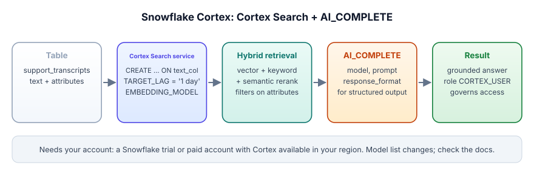

Snowflake Cortex: Cortex Search and AI_COMPLETE
Snowflake splits RAG into two pieces that stay inside your account.
Cortex Search is a managed search service: each query mixes vector search, keyword search and a semantic rerank.
AI_COMPLETE is a SQL function that sends a prompt to a model hosted in Snowflake.
TARGET_LAG sets how fresh the search must stay, and fresher costs more refresh work.
To use any of it, a role needs the USE AI FUNCTIONS privilege and the CORTEX_USER or AI_FUNCTIONS_USER database role.
Cortex Search is like a school library that re-shelves itself every night: you tell it how fresh the shelves must be, and it keeps them that fresh. AI_COMPLETE is the helper who reads the books it finds and writes the answer.
| In the picture | In the real system |
|---|---|
| How fresh the shelves must be | TARGET_LAG on the Cortex Search service |
| The re-shelving work | Refresh work that keeps the service within TARGET_LAG of the source table |
| Finding the right books | Hybrid retrieval: vector + keyword search, then semantic reranking |
| The helper who reads and writes the answer | AI_COMPLETE(model, prompt [, model_parameters, response_format, show_details]) |
| Only reading your own region's shelf | Filtering on an ATTRIBUTES column (region) set by your code |
Where the picture breaks. 'every night' is a setting you pay for: ask for every minute and the library re-shelves constantly, whether or not any book changed.
Going deeper
Snowflake packages retrieval as a managed service (Cortex Search: hybrid search with reranking, kept fresh on a schedule) and generation as a SQL function (AI_COMPLETE). Together they are a full RAG stack with your data never leaving the account.
You need a Snowflake account in a region where Cortex features are available, a role that has the USE AI FUNCTIONS account-level privilege and one of the CORTEX_USER or AI_FUNCTIONS_USER database roles (Snowflake Cortex AI Functions docs), and a warehouse. Trial accounts come with credits; check that Cortex is enabled for your region and edition (⚠ unverified for your account). Local stand-in: labs/10_ai_sql_udf.py. We did not run the SQL below against a live account.
Cortex Search is a search service you create over a table's text column. Each query combines vector search, keyword search and semantic reranking of the top results, and the service refreshes from the source table within a TARGET_LAG you set. AI_COMPLETE(model, prompt [, model_parameters, response_format, show_details]) generates a completion from a model hosted in Snowflake; response_format gives you structured output. AI_COMPLETE is the newer form of the older SNOWFLAKE.CORTEX.COMPLETE.

Create the service (this is the docs' own example):
CREATE OR REPLACE CORTEX SEARCH SERVICE transcript_search_service
ON transcript_text
ATTRIBUTES region
WAREHOUSE = cortex_search_wh
TARGET_LAG = '1 day'
EMBEDDING_MODEL = 'snowflake-arctic-embed-l-v2.0'
AS (
SELECT transcript_text, region, agent_id
FROM support_transcripts
);Query it. In SQL you preview results with SNOWFLAKE.CORTEX.SEARCH_PREVIEW, passing a JSON body with the query, the columns to return, a filter (for example region equals North America) and a limit. Apps call the same service through the Python API or REST.
Generate. The docs' simplest call:
SELECT AI_COMPLETE('claude-sonnet-5', 'What are large language models?');For RAG, put the retrieved transcripts in the prompt with the grounding instruction from Lesson 3.7. Model names in Snowflake's examples on 2026-11-03 included claude-sonnet-5, claude-haiku-4-5, llama3.3-70b, mistral-large3, openai-gpt-5.4 and gemini-3.1-pro; availability varies by region, so check before you choose.
Assumptions (scenario): 5 M transcripts, 40,000 new ones a day, agents in 4 regions, 15,000 assistant questions a day, 4 retrieved transcript snippets of 250 tokens each per answer.
- Service design. One Cortex Search service ON transcript_text with ATTRIBUTES region, so each query filters to the agent's region. Filtering cuts both leakage risk and the candidate set.
- Freshness. New transcripts matter within hours, not seconds: TARGET_LAG = '1 hour' picks up the 40,000 daily additions in about 24 refreshes. A one-minute lag would refresh 1,440 times a day for little gain.
- Prompt size. 4 x 250 = 1,000 tokens of context plus 200 of instructions: about 1,200 input tokens per answer, 15,000 x 1,200 = 18 M input tokens a day into AI_COMPLETE.
- Model choice. At the Claude Haiku 5.5 list price, checked 2026-11-03 of from $0.10 per million input tokens that would be about $1.80 a day of input; Snowflake bills Cortex models in its own credits, so check your rate card. Whatever the price, model choice is a smaller lever than prompt size and call count.
- Batch summaries. Summarising all 40,000 new transcripts nightly with AI_COMPLETE is a separate batch job; enable error handling so one failing row does not stop the statement.
Two dials decide this design: TARGET_LAG for freshness cost, and attribute filters for who can see what.
Freshness and cost in one setting
TARGET_LAG is the trade-off dial. A lag of one minute keeps search fresh for a live support queue but refreshes constantly; a lag of one day is fine for policy documents and costs far less. Pick it per corpus, the same way you would pick a refresh schedule for any materialised table.
- Cortex Search = managed hybrid retrieval (vector + keyword + semantic rerank), refreshed within
TARGET_LAG. - Filter on
ATTRIBUTEScolumns (region, product, tenant) at query time to scope results. AI_COMPLETE(model, prompt [, model_parameters, response_format, show_details])generates in SQL;response_formatfor structured output.- Today one failing row stops an AI_COMPLETE statement by default; enable session error handling or
return_error_detailsfor batch jobs. A pending behaviour change (BCR-2184, bundle 2026_02) makes most AI functions return NULL on failure instead (release note), so check which behaviour your account has. - Access needs the USE AI FUNCTIONS account privilege plus the
CORTEX_USERorAI_FUNCTIONS_USERdatabase role (docs).
An agent in North America should only see North American transcripts in search results. Where does that rule belong?
Policy documents change about twice a week. Which TARGET_LAG makes sense?
What three retrieval components does each Cortex Search query combine, according to Snowflake's docs?
1. Map each Track 3 RAG step to its Cortex piece.
2. Your batch AI_COMPLETE over 300 K rows stops at row 90 K. What do you change?
3. List three things you would compare when choosing between Cortex Search and building your own index.
▸ Show solutions & reasoning
1. Chunk: your SQL (split text into rows) before the service. Embed and index: the Cortex Search service (EMBEDDING_MODEL). Retrieve, hybrid and rerank: the service query. Generate: AI_COMPLETE. Evaluate: a golden table plus SQL metrics, as in lab 06.
2. Enable error handling for the session (AI_SQL_ERROR_HANDLING_USE_FAIL_ON_ERROR=false per the docs) or pass return_error_details => TRUE, store value and error per row, and retry only the failures.
3. Retrieval quality on your golden set (recall@k), operational cost at your query volume and refresh lag, and control (choice of embedding model, chunking, reranker, latency). Managed wins on operations; your own index wins on control. Measure the first before arguing about the others.
Step back and the three lessons are one design. Corpus and embeddings live as governed tables. Retrieval is a SQL function or managed service with hybrid search. Generation is a per-row SQL function with structured output and row-level error handling. Around all three sit the same disciplines: filter before you call, constrain the output, evaluate on a golden set, trace every run with prompt and model version, and enforce access in code and grants, never in the prompt. Learn those once and switching platforms is a syntax change.
You now have the full path from prompt to production, on your laptop and on your platform. Revisit Lab 10 and port it to the platform you use at work.
labs/10_ai_sql_udf.pyFree and offline once set up: Ollama with qwen2.5:7b, plus the packages in labs/README.md. From the course folder:
python labs/10_ai_sql_udf.pyWhat to look for: Section 3 is a tiny Cortex Search stand-in: embeddings in a column and a cosine ranking in SQL (no keyword leg or reranker, which Cortex adds). Section 4 prints the AI_COMPLETE query to run in your account. Add a region column to the reviews table and a WHERE region = ... filter to see attribute scoping.
Small samples: these labs use 5 to 20 cases so they run in minutes on a laptop. Where they report a rate, they print n and a 95% Wilson interval. Read them as a demonstration of the mechanism, not as a measured rate for your system; for that you need hundreds of cases and several seeds.
▸ Recorded output (our run, 2026-11-03, qwen2.5:7b on a laptop GPU)
(2, Decimal('0.380'), 'Jar lid cracked in a week, customer care never called back.')
(3, Decimal('0.108'), 'Kettle is okay. Boils fast but the handle gets hot.')
4) The same pattern on your platforms (needs your account - free trial / free tier)
-- BigQuery (AI.GENERATE, docs read 2026-11-03)
SELECT review_id, AI.GENERATE(CONCAT('Classify sentiment as positive, negative or mixed: ', review)).result AS sentiment
FROM `my_project.shop.reviews`;
-- Snowflake Cortex (AI_COMPLETE)
SELECT review_id, AI_COMPLETE('claude-haiku-4-5', 'Classify sentiment as positive, negative or mixed: ' || review) AS sentiment
FROM shop.reviews;
-- Databricks SQL (ai_query)
SELECT review_id, ai_query('system.ai.meta-llama-3-3-70b-instruct', CONCAT('Classify sentiment as positive, negative or mixed: ', review)) AS sentiment
FROM shop.reviews;
Model and endpoint names change often: check the current list in each doc page before you run these.
{"llm": 10, "cache_hits": 8}Your numbers will differ a little run to run. Full log: labs/outputs. Source: labs/10_ai_sql_udf.py.
Warm-up. Read the CREATE CORTEX SEARCH SERVICE example and name what each clause controls: ON, ATTRIBUTES, WAREHOUSE, TARGET_LAG, EMBEDDING_MODEL, AS.
▸ Solution
ON: the text column that is searched. ATTRIBUTES: columns you can filter on at query time. WAREHOUSE: the compute that builds and refreshes the service. TARGET_LAG: how stale the service may get relative to the source. EMBEDDING_MODEL: which model creates the vectors. AS: the query defining the source rows and returned columns.
Transfer. A batch AI_COMPLETE over 300 K rows must not stop on one failure. Give two ways the docs offer.
▸ Solution
Set the session parameter AI_SQL_ERROR_HANDLING_USE_FAIL_ON_ERROR to false so failing rows return NULL or an error object while others continue, or pass return_error_details => TRUE as the last argument so each row returns an object with value and error. Store both, and retry only the errored rows.
Stretch. Compare Cortex Search with building your own index from embeddings in a table. When does each win?
▸ Solution
Cortex Search wins when you want hybrid retrieval with reranking and scheduled freshness without running anything yourself, and the corpus already lives in Snowflake. Your own index wins when you need a specific embedding model, custom chunking or reranking, very tight latency control, or the same index across clouds. Decide with recall@k on your golden set, cost at your query and refresh volume, and the operational load your team can carry.
Junior What is AI_COMPLETE?
▸ Model answer
A Snowflake SQL function that generates a completion from a prompt (text or images) using a model hosted in Snowflake. You pass a model name and a prompt, and optionally model parameters, a response_format for structured output and a flag for details. It is the newer form of SNOWFLAKE.CORTEX.COMPLETE, and callers need the USE AI FUNCTIONS account privilege plus the CORTEX_USER or AI_FUNCTIONS_USER database role.
Mid How do you choose TARGET_LAG for a Cortex Search service?
▸ Model answer
From how quickly the data changes and how stale an answer may be. A live support queue may need minutes; policy documents changing weekly are fine with hours or a day. Lower lag means more frequent refresh work and cost. Measure: track the age of the newest indexed row and set the lag just under the staleness your users notice.
Senior How do you stop a Snowflake RAG assistant from leaking one customer's data to another?
▸ Model answer
Enforce scope in the system, not the prompt. Put the tenant or region in ATTRIBUTES and apply the filter in every search request from the authenticated identity in service code. Back it with role-based access on the source tables and service, so a misconfigured filter still cannot read forbidden data. Add golden tests where the most similar document belongs to another tenant, and log retrieved ids per request so you can audit.
In one line: Cortex Search finds the passages, AI_COMPLETE writes the answer, and TARGET_LAG is the dial between fresh and cheap.